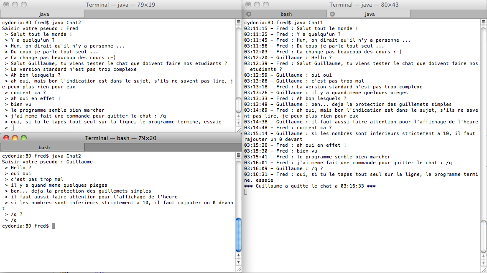

TP 7-8
Objectifs :
Ce TP vous fera découvrir l'utilisation de Java pour interroger une base de données (envoyer des requêtes, et traiter/afficher les résultats).
Pour ce faire, nous allons utiliser une bibliothèque Java simplifiée qui agira comme une façade, vous permettant de réaliser simplement des actions qui sont normalement plus complexes à mettre en oeuvre.
Prenez le temps de bien lire la description de la bibliothèque à utiliser, avant de vous jeter sur le sujet du TP.
Avant de commencer, assurez-vous d'avoir récupéré les fichiers BD.class et mysql-connector-java.jar, et de les avoir placés dans votre répertoire de travail, dans le dossier où vous allez écrire votre programme Java.
La bibliothèque BD vous permettra de manipuler aisément deux types d'entités :
Ces deux entités sont référencés par des identifiants (entiers) qui seront utilisés pour toute manipulation.
int BD.ouvrirConnexion(String adresse, String bd, String login, String password)
Ouvre une connexion à la base de données nommée bd en se connectant au serveur web
adresse, avec le nom d'utilisateur login et le mot de passe password.
Cette fonction renvoie un entier positif ou nul identifiant la connexion ouverte (à réutiliser par la suite).
En cas d'erreur, la valeur -1 est renvoyée.
void BD.fermerConnexion(int connexion)
Ferme la connexion identifiée par connexion précédemment ouverte.
int BD.executerSelect(int connexion, String sql)
Exécute une requête de type SELECT sur la base de données.
Cette fonction renvoie un entier positif ou nul identifiant le résultat associé à la requête. La position courante
du parcours du résultat est avant le premier enregistrement.
En cas d'erreur, la valeur -1 est renvoyée.
int BD.executerUpdate(int connexion, String sql)
Exécute une requête de type INSERT, UPDATE ou DELETE sur la base de données.
Cette fonction renvoie un entier positif ou nul indiquant le nombre d'enregistrements impactés par l'exécution de la requête.
Si la requête réalisait un INSERT d'un numéro automatique, il renvoie
le numéro automatique généré pour le nouvel enregistrement.
En cas d'erreur, la valeur -1 est renvoyée.
boolean BD.suivant(int res)
Passe à l'enregistrement suivant pour le résultat res.
Cette fonction renvoie true si l'enregistrement suivant a pu être atteint (s'il existe), false en cas d'erreur.
boolean BD.reinitialiser(int res)
Ré-initialise le parcours des enregistrements en se plaçant avant le premier
enregistrement du résultat res.
Cette fonction renvoie true si la réinitialisation a pu être effectuée, false en cas d'erreur.
void BD.fermerResultat(int res)
Libère la mémoire du résultat res, et supprime ce résultat ; son identifiant ne
sera plus réutilisable par la suite (attention, il pourra être réattribué par la suite).
String BD.attributString(int res, String att)
Renvoie la valeur de l'attribut att pour l'enregistrement courant du résultat
res sous la forme d'une chaîne de caractères.
int BD.attributInt(int res, String att)
Renvoie la valeur de l'attribut att pour l'enregistrement courant du résultat
res sous la forme d'un entier.
long BD.attributLong(int res, String att)
Renvoie la valeur de l'attribut att pour l'enregistrement courant du résultat
res sous la forme d'un entier long.
long BD.maintenant()
Renvoie un entier long représentant la date du jour sous la forme du nombre de millisecondes écoulées depuis le 1er janvier 1970 à minuit.
long BD.date(int jour, int mois, int annee, int heures, int minutes, int secondes)
Renvoie un entier long représentant la date spécifiée par les valeurs passées en paramètres.
int BD.jour(long d)
Renvoie un entier représentant le numéro du jour (1-31) à partir d'une date d spécifiée par un entier long.
int BD.mois(long d)
Renvoie un entier représentant le numéro du mois (1-12) à partir d'une date d spécifiée par un entier long.
int BD.annee(long d)
Renvoie un entier représentant une année à partir d'une date d spécifiée par un entier long.
int BD.heures(long d)
Renvoie un entier représentant les heures (0-23) à partir d'une date d spécifiée par un entier long.
int BD.minutes(long d)
Renvoie un entier représentant les minutes (0-59) à partir d'une date d spécifiée par un entier long.
int BD.secondes(long d)
Renvoie un entier représentant les secondes (0-59) à partir d'une date d spécifiée par un entier long.
void BD.pause(int m)
Met le programme en pause pour une durée de m millisecondes.
L'extrait de code Java ci-dessous vous donne une idée du fonctionnement de la bibliothèque :
int co = BD.ouvrirConnexion("172.20.XXX.YYY","maBase","monLogin","monMotDePasse");
int res = BD.executerSelect(co, "SELECT * FROM maTable");
while (BD.suivant(res)) {
Ecran.afficher("Valeur de attribut1 (entier) = ", BD.attributInt(res,"attribut1"));
Ecran.afficher(" et valeur de attribut2 (chaine) = ", BD.attributString(res,"attribut2"));
Ecran.sautDeLigne();
}
BD.fermerResultat(res);
BD.fermerConnexion(co);
Dans ce TP, vous devrez réaliser une application de chat, permettant aux utilisateurs de discuter entre eux en direct.
Cette application se présentera sous la forme de deux programmes Java : le premier permettant de récupérer, à intervalles réguliers, les messages postés par les participants au chat, et le second permettant de saisir des messages. Ces deux programmes pourront être lancés en parallèle.
Ces deux applications travailleront avec la base de données nommée chat, hébergée sur le serveur
172.20.128.64. Le login est chat_user ; le mot de passe est chat_pass.
La structure de la base de données chat est simplifiée à l'extrème : elle ne contient qu'une seule table
nommée message composée des attributs suivants :
msgId : identifiant du message (entier - numéro automatique) - clé primaire de la table
msgTexte : texte du message (chaîne - 255 caractères maxi)
msgPseudo : pseudo de l'auteur (chaîne - 20 caractères maxi)
msgDate : horodatage du message (entier long)
Ci-dessous un petit exemple de l'utilisation du chat (les deux fenêtres de gauche représentent deux utilisateurs différents, la fenêtre de droite montre l'affichage des messages reçus sur le chat) :
BD.pause(3000);).
/q (tapée comme message) permettra de quitter l'application.
HH:MM:SS - <Pseudo> : <Texte>
' quotes, servant de délimiteur de chaînes en MySQL devront
être protégées par un \' dans le texte des messages avant insertion dans la base.
*** Pseudo s'est (dé)connecté(e) ***